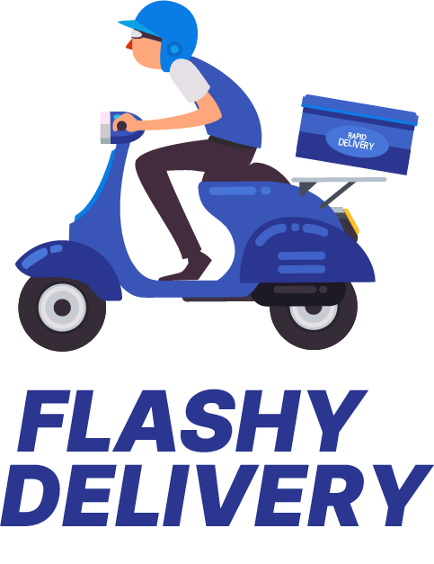

<!-- si estas en login no se muestra, caso contrario si se muestra -->
<!-- TODO: esta condicion podria cambiar a si se esta logueado -->
<ng-template [ngIf]="route !== '/login'">

<nav class="navbar navbar-expand-sm navbar-light bg-light">

  <a routerLink = '/index' class="navbar-brand" >
    
  </a>
  <button class="navbar-toggler" type="button" data-toggle="collapse" data-target="#navbarSupportedContent" aria-controls="navbarSupportedContent" aria-expanded="false" aria-label="Toggle navigation">
    <span class="navbar-toggler-icon"></span>
  </button>

  <div class="collapse navbar-collapse" id="navbarSupportedContent">

    <ul class="navbar-nav ml-auto">
      <li class="nav-item" routerLinkActive="active-link">
        <a class="nav-link" routerLink="/index">Perfil</a>
      </li>
      <li class="nav-item" routerLinkActive="active-link">
        <a class="nav-link" routerLink="#">Menú</a>
      </li>
      <li class="nav-item" routerLinkActive="active-link">
        <a class="nav-link" routerLink="#">Pedidos <label for="">0</label></a>
      </li>
      <li class="nav-item" routerLinkActive="active-link">
        <a class="nav-link" routerLink="/login">Salir</a>
      </li>
    </ul>

  </div>

</nav>

</ng-template>